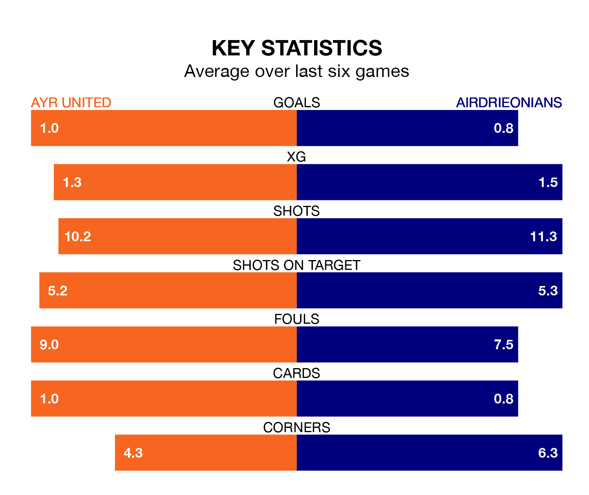

Ayr United face Airdrieonians at Somerset Park on Saturday looking to secure a first win in six Scottish Championship games.
The Honest Men have lost three and drawn two matches since they last earned three points – against Dunfermline Athletic on October 21.
They face an Airdrieonians side who have won just one and drawn one over that time.
In Joshua Rae, Airdrieonians can rely on one of the league's safest pair of hands. He has kept three clean sheets in his 14 appearances this season, and only one other 'keeper – Dundee United's Jack Walton – has been able to prevent the opposition scoring on more occasions in Scottish Championship.
In Ayr's net, Charlie Albinson has two clean sheets in 12 games. He has conceded a goal every 54 minutes, 40% more often than the 74 minutes between goals for Rae.
In the last 10 years, Ayr and Airdrieonians have played each other on 16 occasions. Ayr won eight of them, Airdrieonians seven, and they drew once.
On average, the Honest Men scored 1.4 goals and Airdrieonians 1.5 in those matches.
Their last meeting was on October 7, when Ayr won 2-1 away.
With 14 goals in 15 games so far this season, the away team are the league's joint-second-lowest scorers with 0.9 goals per game. But they are conceding fewer than average too, letting in 21 goals at a rate of 1.4 per game.
United are also below average scorers, with 1.2 goals per game, compared to a league average of 1.5. They have conceded 1.9 goals per game.
The Honest Men are seventh in the table after 14 games, of which they have won four and drawn two, earning 14 points.
Airdrieonians are two places ahead of the hosts in fifth, with five wins and two draws putting them on 17 points.
Ayr's last match was on December 9, a 1-0 loss against Dundee United.
Airdrieonians lost 2-1 against Dunfermline Athletic last time out, also on December 9, with Callum Gallagher on the scoresheet.
